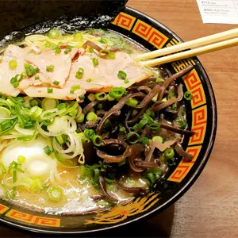

RECETA
Ramen japonés

PLATOS
El ramen es uno de los platos más emblemáticos de la cocina japonesa, conocido por su caldo profundo y aromático que puede variar entre sabores como soja, miso o cerdo. Servido con fideos, carne, huevo y diversos acompañamientos, cada bol ofrece una combinación única de texturas y matices. Más que una simple sopa, el ramen representa una experiencia reconfortante que combina tradición, técnica y creatividad en cada cucharada.
Historia
Según los historiadores, la teoría más plausible es que el ramen fue introducido en Japón a finales del siglo XIX por inmigrantes chinos que vivían en el barrio de Yokohama. En , las sopas de fideos chinas se habían popularizado en Yokohama, Kobe, Nagasaki y Hakodate, pero esta popularidad se concentraba principalmente entre los inmigrantes chinos. Los chinos servían una variedad de platos de sopa de fideos y se referían a ellos por sus nombres específicos, como sopa de fideos con cerdo asado y sopa de fideos con cerdo cortado en rodajas.
Los japoneses se referían a todos estos platos de sopa como fideos de Nanjing (una ciudad china). Estas sopas de fideos tenían una gran demanda entre los estudiantes chinos, que echaban de menos la cocina de su país de origen y que pensaban que la comida japonesa era sosa.
Tras la derrota de Japón en la Segunda Guerra Mundial, el ejército americano ocupó el país de a . En , Japón registró su peor cosecha de arroz en 42 años, lo que provocó escasez de alimentos; los EE. UU. inundaron el mercado con harina de trigo barata para hacer frente a la escasez; esto, y el hecho de que miles de colonizadores japoneses regresaron de China familiarizados con la cocina china, hizo que el ramen que se había originado en el barrio chino de Yokohama se popularizara.
Ingredientes
Aquí le proponemos una receta sencilla: con unos pocos ingredientes y un poco de paciencia, podrá disfrutar de un ramen tan bueno como el de una calle de Tokio.
- 400 gramos de fideos ramen
- Cebollino picado
- Alga nori
- Caldo
- Huevo marinado
- Aceite aromático
Cocinar ramen
Cada región de Japón tiene su propia versión de ramen, adaptada a los gustos locales. Así encontramos ramen con caldo de miso, con caldo blanco y cremoso de cerdo, con fideos finos, con fideos gruesos…
En el siguiente vídeo podrá descubrir paso a paso cómo preparar esta deliciosa receta.